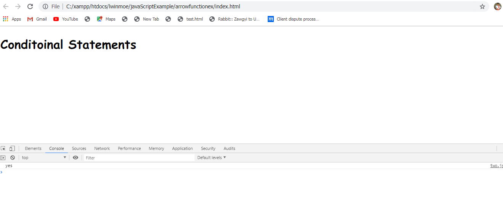
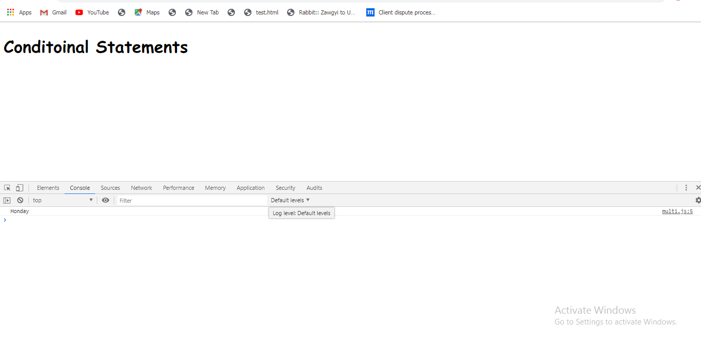
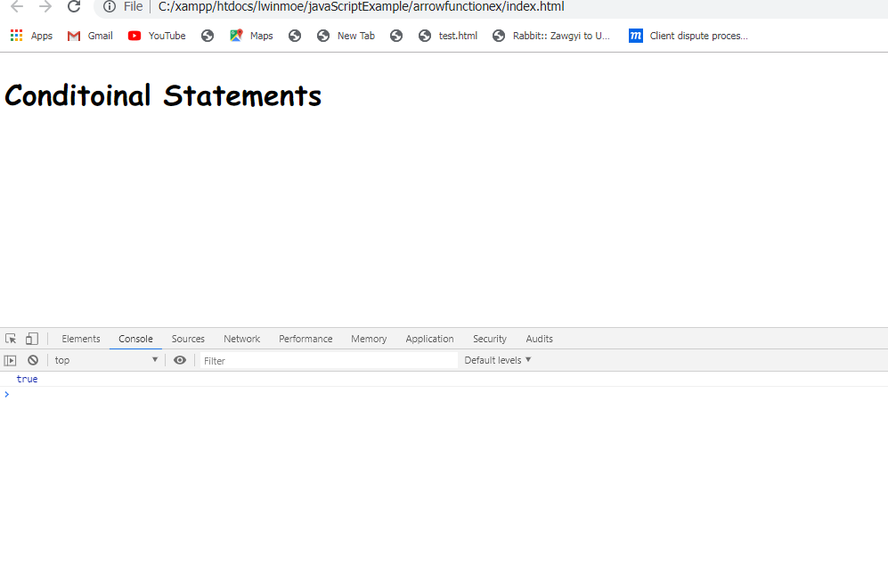
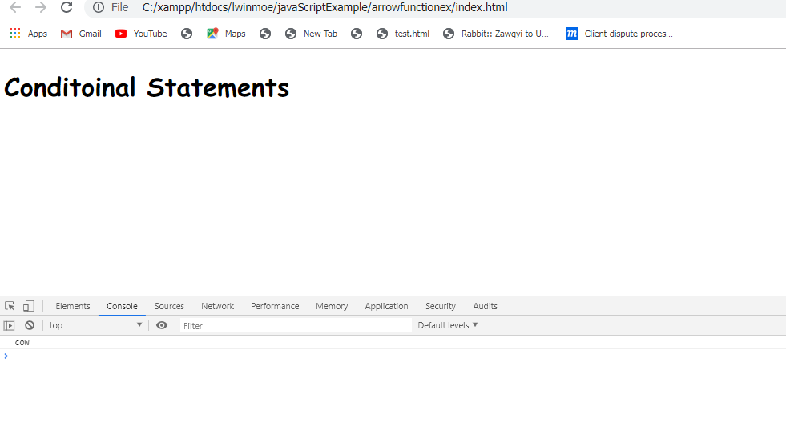
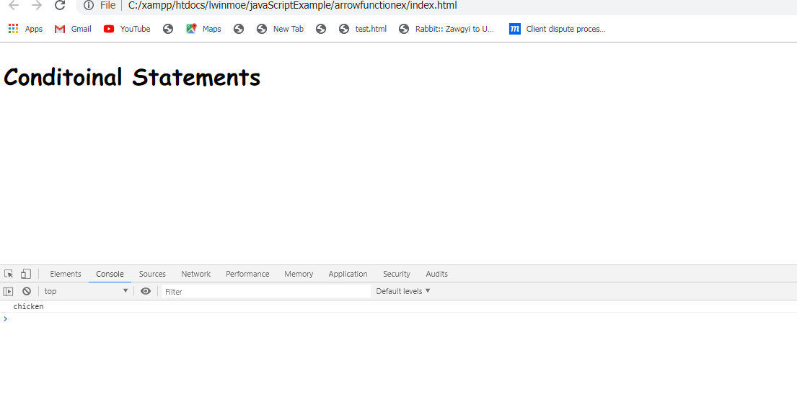
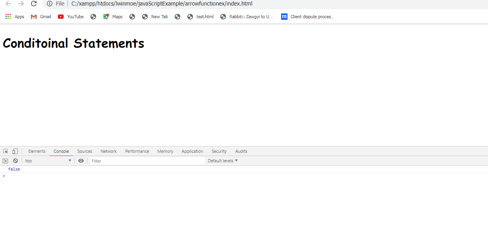
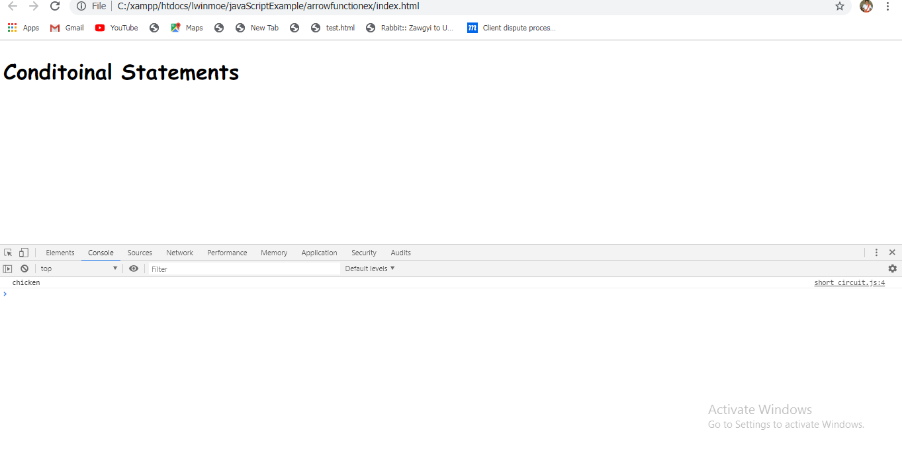

ကျွန်တော်တို့အခု functions တွေကို writing လုပ်ဖို့ရန်အတွက် method တစ်ခုအကြောင်းကို သွားကြည့်ရအောင်။ သူ့ကို ECMAscript 2015 မှာ introduced လုပ်ခဲ့တာဖြစ်ပါတယ်။ ဒီ syntax ဟာဆိုရင် JavaScript developers တွေကနေ widely adopted လုပ်ထားတာဖြစ်ပါတယ်။ Arrow syntax ဟာ concise ဖြစ်တဲ့အတွက်ကြောင့် အသုံးပြုကြပါတယ်။ Arrow functions ဟာဆိုရင် common JavaScript gotchas တွေကို solve လုပ်ပေးပါတယ်။ Example မှာဆိုရင် function declare နဲ့ function နှစ်ခုရှိပါတယ်။ Function declaration တစ်ခုဟာ keyword function နဲ့ စပါတယ်။ Keyword နေရာမှာ ကျွန်တော်တို့ကြိုက်တဲ့ name ကို ပေးနိုင်ပါတယ်။ Name နောက်မှာ parentheses ရယ် curly braces ကိုလိုက်ပေးရပါမယ်။ အဲံ curly braces ထဲမှာ ကျွန်တော်တို့ function runs လုပ်နေချိန်မှာ execute လုပ်ချင်တဲ့ block of code တွေကို ရေးနိုင်ပါတယ်။ Function expression တစ်ခုဟာ arrow function တစ်ခုနဲ့ similar ဖြစ်ပါတယ်။ Function expression တစ်ခုကို ကျွန်တော်တို့ဟာ variable တစ်ကို assign လုပ်ခဲ့ရမှာဖြစ်ပါတယ်။ အဲ့မှာဆိုရင် variable ကို const နဲ့ပေးတာပိုကောင်းပါတယ်။ အဲ့မှာဆိုရင် const ကိုအသုံးပြုလိုက်ခြင်းအားဖြင့် sayName function ရဲ့ functionality ဟာ ပြောင်းလဲမသွားပါဘူး။ Arrow functions တွေဟာ function expressions နဲ့ similar ဖြစ်တဲ့ expressions တွေပဲဖြစ်ပါတယ်။ ကျွန်တော်တု့ိဟာ function expression ကနေ arrow function expression ကို ပြောင်းတဲ့နေရာမှာ function ဆိုတဲ့ keyword ကို remove လုပ်မယ်။ ပြီးတော့ parentheses လိုက်ပြီးတော့ parentheses ရဲ့ နောက်မှာ arrow ကို add လုပ်ပေးရမှာဖြစ်ပါတယ်။ arrow ကို create လုပ်တဲ့အခါမှာ equal sign နဲ့ greater than sign ကို တွဲရေးပေးရမှာ ဖြစ်ပါတယ်။ နောက် sections တွေမှာ ကျွန်တော်တို့ဟာ single or multiple arguments တွေဟာ arrow functions နဲ့ ဘယ်လိုအလုပ်လုပ်တယ်ဆိုတာကိုလေ့လာသွားဖြစ်ပါတယ်။
const name = "Andrew";
const sayName = () => {
const message = "My name is " + name ;
console.log(message);
}
const sayBye = () => {
console.log("Bye " + naem);
}
ကျွန်တော်တို့ အရင် section မှာ create လုပ်ခဲ့တာကတော့ argument မပါတဲ့ arrow function ကို create လုပ်ခဲ့တာဖြစ်ပါတယ်။ အခု section မှာတော့ arguments တွေနဲ့ create လုပ်သွားမှာဖြစ်ပါတယ်။ Arrow function မှာ argument or multiple arguments တွေကို put လုပ်တာဟာ simple function မှာ add လုပ်သလိုပါပဲ။ ကျွန်တော်တို့ add လုပ်ချင်တဲ့ argument ကို parentheses ထဲမှာ add လုပ်လိုက်လို့ရပါတယ်။ Arguments နှစ်ခုဆိုရင်တော့ သူတို့ကြား comma နဲ့ separate လုပ်ပေးရမှာဖြစ်ပါတယ်။
const square = (x) => {
return x * x;
}
const cube = (x) => {
return square(x) * x;
}
const multipy = (x,y) => {
return x *y;
}
const add = (a,b) => {
return a+b;
}
const subtract= (a,b) => {
return a-b;
}
Arrow functions တွေဟာ functions declarations တွေထက် less verbose ဖြစ်ပါတယ်။ ဒါပေမဲ့ ကျွန်တော်တို့ဟာ သူတို့ကို နောက်ထပ် concise ဖြစ်အောင်လုပ်နိုင်ပါသေးတယ်။ ကျွန်တော်တို့ဟာ single argument နဲ့ arrow function မှာဆိုရင် parentheses နဲ့ curly braces ရယ် return keyword ကို ဖြုတ်ပြီးတော့ arrow function ကို create လုပ်နိုင်ပါတယ်။ Argument ဟာ နှစ်ခုဖြစ်နေတယ်ဆိုရင် curly braces ကိုဖြုတ်လို့မရပါဘူး။ နောက် code ဟာ line တစ် line ထဲမှာရှိတဲ့ အခါမျိုးမှာဆိုရင်လည်း parentheses နဲ့ curly braces ရယ် return keyword ကို ဖြုတ်ပြီးတော့ ရေးနိုင်ပါတယ်။ နောက် code တွေဟာ multiple line ရှိတဲ့အခါမှာဆိုရင်တော့ parentheses နဲ့ curly braces ကို ဖြုတ်ပြီးတော့ ရေးလို့မရပါဘူး။
const square = x => x * x;
const cube = x => square(x) * x;
const multipy = (x,y) => x *y;
const add = (a,b) => a+b;
const subtract= (a,b) => a-b;
const name = "Andrew";
const sayName = () => {
const message = "My name is " + name ;
console.log(message);
}
const sayBye = () => {
console.log("Bye " + naem);
}
အခု section မှာတော့ ကျွန်တော်တို့ရဲ့ JavaScript code ထဲမှာ decisions တွေကို represent လုပ်တဲ့ few ways တွေကို လေ့လာသွားမှာဖြစ်ပါတယ်။ ကျွန်တော်တို့ အရင် sections တွေမှာ if, else statement တစ်ခုကို ဘယ်လို ရေးရတယ်ဆိုတာကို လေ့လာခဲ့ပြီးဖြစ်ပါတယ်။ အဲ့ဒါကို conditional လို့ခေါ်ပါတယ်။ ဘာကြောင့်လဲဆိုတော့ သူဟာ true ဖြစ်တဲ့ condition မှာ တစ်ခုကို လုပ်မယ် ပြီးတော့ else ဆိုတဲ့ condition မှာ သူထဲမှာတစ်ခုခု လုပ်ဆောင်တဲ့အတွက်ကြောင့်ပဲဖြစ်ပါတယ်။ if, else statement ရဲ့ paths တွေကို branches တွေလိုခေါ်ပါတယ်။ အဲ့ Branch တွေဟာ conditional test တစ်ခုရဲ့ result ပေါ်မှာအခြေခံပြီးတော့ ကျွန်တော်တို့ရဲ့ programs logic တွေကို different directions တွေရဲ့ flow ပဲဖြစ်ပါတယ်။ ကျွန်တော်တို့ဟာ branch ကို ကျွန်တော်တို့လိုချင်သလို many directions နဲ့ အသုံးပြုနိုင်ပါတယ်။ Example မှာဆိုရင် branching ကို if statements တွေကို အသုံးပြုပြီးတော့ ပြထားပါတယ်။ အဲ့မှာဆိုရင် two way and multi way conditional တွေကို ပြပေးထားပါတယ်။ First အနေနဲ့ if, else statement ရဲ့ အလွန် simple ဖြစ်တဲ့ example ကိုသွားကြည့်ရအောင်။ two.js ဆိုတဲ့ file ဟာ two way branching ရဲ့ simple example တစ်ခုဖြစ်ပါတယ်။ နောက် multi.js file ကို multi-way branching နဲ့ လုပ်ပြထားတာဖြစ်ပါတယ်။ two.js ထဲမှာဆိုရင် var isTrue ထဲမှာ true ကို set လုပ်ထားတာဖြစ်ပါတယ်။ အဲ့မှာဆိုရင် isTrue ဟာ true ဖြစ်တဲ့အခါမှာ yes ဆိုပြီးတော့ console မှာ ထုပ်ပေးမှာဖြစ်ပါတယ်။ နောက် isTrue ဟာ false ဖြစ်တဲ့အခါမှာ no ဆိုပြီးတော့ console မှာ ထုပ်ပေးမှာဖြစ်ပါတယ်။ နောက် multi.js မှာဆိုရင် multi-way branch တွေရှိပါတယ်။ အဲ့မှာဆိုရင် day ဆိုတဲ့ var လေးဟာ 0 ဆိုရင်တော့ Sunday ဆိုပြီးတော့ console မှာထုပ်ပေးမှာဖြစ်ပါတယ်။ နောက် day ဟာ 0 tot 6 မဟုတ်တဲ့အခါမှာ Invalid Day ဆိုပြီးတော့ console မှာ ထုပ်ပြပေးမှာဖြစ်ပါတယ်။ နောက် section မှာတော့ program တစ်ခုထဲကို multiple branching logic တွေကို adding လုပ်တဲ့ very compact way တစ်ခုဖြစ်တဲ့ switch statement ကို လေ့လာသွားမှာဖြစ်ပါတယ်။
var isTrue = true;
if(isTrue){
console.log("yes");
} else {
console.log("no");
}

var day = 1;
if (day === 0){
console.log("Sunday");
} else if (day === 1){
console.log("Monday");
} else if (day === 2){
console.log("Tuesday");
} else if (day === 3){
console.log("Wednesday");
} else if (day === 4){
console.log("Thursday");
} else if (day === 5){
console.log("Friday");
} else if (day === 6){
console.log("Saturday");
} else {
console.log("Invalid Day");
}
Switch statement ကို multiple branching logic တွေအတွက်အသုံးပြုပါတယ်။ multi.js file ကိုအသုံးပြုပြီးတော့ လုပ်ပြသွားမှာဖြစ်ပါတယ်။ Switch ဟာ if statement တစ်ခုရဲ့ some ways တွေနဲ့ similar ဖြစ်ပါတယ်။ သူ့မှာဆိုရင် parentheses ရှိမယ် block of code တစ်ခုကို hold လုပ်ထားတဲ့ curly braces နဲ့ followed လုပ်ထားတာဖြစ်ပါတယ်။ Parentheses ကတော့ expression တစ်ခုကို hold လုပ်တာဖြစ်ပါတယ်။ Parentheses ထဲမှာ if statement တစ်ခုဖြစ်ပါတယ်။ နောက် if statement နဲ့ မတူတာကတော့ cases အားလုံးဟာ block of code တစ်ခုထဲမှာ contain ဖြစ်ရမှာဖြစ်ပါတယ်။ အဲ့အတွက် case ဆိုတဲ့ keyword ကိုအသံုံးပြုရမှာဖြစ်ပါတယ်။ ကျွန်တော်တို့ဟာ JavaScript interpreter ကို value of day consider လုပ်ပါဆိုပြီးတော့ ပြောလိုက်တာဖြစ်ပါတယ်။ အဲ့မှာဆိုရင် day ဟာ 0 နဲ့ ညီတယ်ဆိုရင် case အောက်မှာရေးထားတဲ့ block of code ကို execute လုပ်ပေးမှာဖြစ်ပါတယ်။ Break statement ကိုရောက်တဲ့အခါမှာ block of code ထဲကနေ ထွက်ပြီးတော့ နောက် instructions ကို set လုပ်ပါလို့ ပြောလိုက်တာဖြစ်ပါတယ်။ အဲ့လိုပဲ ကျွန်တော်တို့ program မှာ လိုအပ်သလောက် switch branches တွေကို add လုပ်နိုင်ပါတယ်။ Switch statement ဟာဆိုရင် အပေါ်က possibilities တွေကို catch လုပ်ဖို့ရန်အတွက် default option တစ်ခုကိုလည်း provide လုပ်ပေးထားပါတယ်။ သူဟာ if else statement တစ်ခုမှာရှိတဲ့ else block လုပ်ဆောင်သလို လုပ်ဆောင်ပါတယ်။ နောက် section မှာတော့ branch လုပ်တဲ့ another way တစ်ခုဖြစ်တဲ့ ternary operator ပဲဖြစ်ပါတယ်။
var day = 1;
// if (day === 0){
// console.log("Sunday");
// } else if (day === 1){
// console.log("Monday");
// } else if (day === 2){
// console.log("Tuesday");
// } else if (day === 3){
// console.log("Wednesday");
// } else if (day === 4){
// console.log("Thursday");
// } else if (day === 5){
// console.log("Friday");
// } else if (day === 6){
// console.log("Saturday");
// } else {
// console.log("Invalid Day");
// }
switch (day) {
case 0:
console.log("Sunday");
break;
case 1:
console.log("Monday");
break;
case 2:
console.log("Tuesday");
break;
case 3:
console.log("Wednesday");
break;
case 4:
console.log("Thursday");
break;
case 5:
console.log("Friday");
break;
case 6:
console.log("Saturday");
break;
default:
console.log("Invalid Day");
break;
}
Ternary operator ဟာ very compact two-way branch တစ်ခုဖြစ်ပါတယ်။ သူ့ကို programmers တွေဟာ code တွေကို very concise ဖြစ်အောင် write ဖို့ရန်အတွက်အသုံးပြုကြပါတယ်။ သူ့မှာ problem တစ်ခုရှိပါတယ်။ အဲ့ဒါကတော့ compact ဖြစ်တဲ့အတွက်ကြောင့် သူ့ကို read လုပ်ဖို့ရန်အတွက် ခက်ခဲပါတယ်။ <boolean> ?<expression if true> :<expression if false> အဲ့ဒါကို ternary လို့ခေါ်ပါတယ်။ ဘာကြောင့်လဲဆိုတော့ သူဟာ expressions ၃ ခုနဲ့ involves ဖြစ်တဲ့အတွက်ကြောင့်ပဲဖြစ်ပါတယ်။ Fist ကတော့ boolean ဖြစ်ပြီးတော့ သူဟာ နောက် expressions နှစ်ခုထဲက ဘယ်ဟာ run လုပ်မယ်ဆိုတာကို determine လုပ်ပေးတာဖြစ်ပါတယ်။ Ternary operator ဟာ characters နှစ်ခုကို အသုံးပြုပါတယ်။ အဲ့ဒါတွေကတော့ question mark and a colon တို့ပဲဖြစ်ပါတယ်။ အဲ့ characters နှစ်ခုဟာ ကျွန်တော်တို့ရဲ့ two branches and conditions အတွက် marker တွေပဲဖြစ်ပါတယ်။ Example မှာဆိုရင် isTrue ထဲမှာ true ကို stored လုပ်ထားတာဖြစ်ပါတယ်။ isTrue ကို question mark ရဲ့မှာ paste လုပ်လိုက်မယ်။ တကယ်လို့ သူဟာ true ဖြစ်တယ်ဆိုရင် question ရဲ့ နောက်က code ကို run လုပ်ပါမယ်။ နောက် isTrue ဟာ false ဖြစ်တယ်ဆိုရင် colon ရဲ့နောက်က code ကို run ပါမယ်။ အောက်က example မှာလေ့လာနိုင်ပါတယ်။
var isTrue = true;
// if(isTrue){
// console.log("yes");
// } else {
// console.log("no");
// }
isTrue ? console.log("yes") : console.log("no");
Boolean operators တွေဖြစ်တဲ့ and နဲ့ or တို့ဟာ statement တစ်ခုထဲမှာ multiple conditions တွေကို test လုပ်ဖို့ရန်အတွက် very useful ဖြစ်ပါတယ်။ And operator ်ဟာဆိုရင် entire condition ဟာ true ဖြစ်ပြီးတော့ evaluate မလုပ်ခင်မှာ multiple conditions တွေကို true ဖြစ်တယ်ဆိုတာကို sure ဖြစ်အောင် ပြုလုပ်ပေးတာဖြစ်ပါတယ်။ Simple programmers တွေဟာ short circuit ကို လုပ်ဆောင်ဖို့ရန်အတွက် Boolean operators တွေကိုအသုံးပြုကြပါတယ်။ သူဟာ expression တစ်ခုရဲ့ evaluation ကို stopping လုပ်ခြင်းဖြင့် code တွေကို optimize လုပ်ဖို့ရန်အတွက် အခြေခံကျတဲ့ way တစ်ခုဖြစ်ပါတယ်။ Boolean operators တွေကို တစ်ခါတစ်လေမှာ a value or execute code ကို quickly assign လုပ်ဖို့ရန်လည်းအသုံးပြုပါတယ်။ Example မှာဆိုရင် အဲ့ဒါဟာ expressions နှစ်လုံးဟာ true ဖြစ်တဲ့အတွက်ကောင့် true ကို log out လုပ်ပေးမှာဖြစ်ပါတယ်။ နောက်ကျွန်တော်တို့ဟာ နောက်က expression နေရာမှာ 'cow' ကို type လိုက်တဲ့အခါမှာ true expression ပဲဖြစ်ပါတယ်။ ဘာကြောင့်လဲဆိုတော့ string ရဲ့ length ဟာ zero ထက်ကြီးတဲ့အတွက်ကြောင့် true ပဲဖြစ်ပါတယ်။ Log out လုပ်ပေးမှာကတော့ cow ကို log out လုပ်ပေးမှာဖြစ်ပါတယ်။ ဘာကြောင့်လဲဆိုတော့ operator ဟာ first one ဟာ truthy ဖြစ်ခဲ့ရင် second value ကို return ပြန်ပေးတာဖြစ်ပါတယ်။ အဲ့မှာဘဲ နောက်ထပ် string တစ်ခုကို add လုပ်တဲ့အခါမှာ နောက်ဆုံး add လိုက်တဲ့ string ကိုပဲ return ပြန်ပေးတာဖြစ်ပါတယ်။ ဘာကြောင့်လဲဆိုတော့ ရှေ့က operands တွေဟာ truthy ဖြစ်တဲ့အတွက်ကြောင့်ပဲဖြစ်ပါတယ်။ နောက်တစ်ခု 'cow' နေရာမှာ false ကို add လုပ်လိုက်တဲ့အခါမှာ သူဟာ false ကို return ပြန်ပေးတာဖြစ်ပါတယ်။ ဘာကြောင့်လဲဆိုတော့ JavaScript interpreters တွေဟာ left most expression ပြီးတော့မှ right ကို move လုပ်တာဖြစ်ပါတယ်။ တစ်ကယ်လို့ any of the operands တွေဟာ falsey ဖြစ်တယ်ဆိုရင် သူဟာ first falsey operand ကို return ပြန်ပေးမှာဖြစ်ပါတယ်။ And operator ဟာဆိုရင် first ဟာ truth value ဖြစ်ပြီဆိုတာနဲ့ သူဟာ left to right ကို read လုပ်သွားဖြစ်ပါတယ်။
console.log( 3 === 3 && 'a' === 'a');
console.log( 3 === 3 && 'cow');
console.log( 3 === 3 && 'cow' && 'chicken');
console.log( 3 === 3 && false && 'chicken');




ကျွန်တော်တို့ && operator နေရာမှာ || operator ကို အစားကြည့်တဲ့အခါမှာ အဲ့မှာဆိုရင် first expression ဟာ truthy ဖြစ်ပါတယ်။ အဲ့မှာဆိုရင် equality operator ဟာ Boolean value တစ်ခုကို return ပြန်ပေးပါတယ်။ နောက် ကျွန်တော်တို့ value 3 နေရာမှာ 4 ကိုအသုံးပြုကြည့်လိုက်တဲ့အခါမှာ သူဟာ cow ကို return ပြန်ပေးမှာဖြစ်ပါတယ်။ အဲ့မှာ ကျွန်တော်တို့ တစ်ခုမှတ်ထားရမှာက ရှေ့က expressions တွေအားလုံးဟာ falsely ဖြစ်တဲ့အခါမှာ last one ကို return ပြန်ပေးမှာဖြစ်ပါတယ်။ if else and switch statements တို့ဟာ multiple branches တွေအတွက် better ဖြစ်ပါတယ်။ ဒါပေမဲ့ ကျွန်တော်တို့အခု လေ့လာခဲ့တဲ့ short circuiting ways ကိုအသုံးပြုနိုင်ပါတယ်။
// console.log( 3 === 3 && 'a' === 'a');
// console.log( 3 === 3 && 'cow');
// console.log( 3 === 3 && 'cow' && 'chicken');
console.log( 3 === 4 || false || 'chicken');
အခု section မှာတော့ JavaScript နဲ့ Internet of Things တွေ အကြောင်းကိုပြောပြပေးသွားမှာဖြစ်ပါတယ်။ First အနေနဲ့ Internet of Things or IoT ဆိုတာဘာလဲ။ Internet of Things ဆိုတာ Internet နဲ့ connect လုပ်ထားတဲ့ sensors, software, and electronics တို့လို physical objects တွေကို describe လုပ်တာပဲဖြစ်ပါတယ်။ Internet of Things devices တွေမှာဆိုရင် Internet ကို couple of ways တစ်ခုထဲမှာ connect လုပ်နိုင်ပါတယ်။ အဲ့ဒါကတော့ directly vis WiFi or router တစ်ခုဆီကို connect လုပ်ထားတဲ့ Ethernet or IoT devices ဟာ smartphone via Bluetooth တို့လို gateway device တစ်ခုကို ဖြတ်ပြီးတော့လည်း connect လုပ်နိုင်ပါတယ်။ သူတို့ဟာ Zigbee and Z-Wave တို့လို wireless technologies တွေပဲဖြစ်ပါတယ်။ Zigbee and Z-Wave တို့ဟာ so-called hubs ကို connect လုပ်ကြပါတယ်။ IoT devices တွေထဲက example အချို့ကိုသွားကြည့်ရအောင်။ First အနေနဲ့ Nest thermostat ဟာဆိုရင် app တစ်ခုကို remotely via တစ်ခုကဲ့သို့ controlled လုပ်နိုင်ပါတယ်။ Nest ဟာဆိုရင် ကျွန်တော်တို့ရဲ့ habits ပေါ်မှာအခြေခံပြီးတော့ automatically adapt and program ကို သူ့ကို ပြုလုပ်နိုင်ပါတယ်။ Samsung ဟာဆိုရင် Internet နဲ့ connect လုပ်နိုင်တဲ့ a line of security cameras ကို produced လုပ်ခဲ့ပါတယ်။ နောက် Market မှာဆိုရင် number of smart lock တွေအများကြီးကို တွေ့ရပါလိမ့်မယ်။ သူတု့ိဟာဆိုရင် ကျွန်တော်တို့ရဲ့ doors တွေကို lock and unlock လုပ်တဲ့နေရာမှာ easy ဖြစ်စေပါတယ်။ Smart locks တွေမှာဆိုရင် ကျွန်တော်တို့ ခရီးသားနေတဲ့အချိန်တွေမှာလည်း သူတို့ကို check လုပ်နိုင်ပါတယ်။ AirBNB hosts ဟာဆိုရင် smart lock ကို guests digital keys တွေကို ပေးဖို့အတွက် အသုံးပြုပါတယ်။ အဲ့ digital keys တွေဟာ smart locks ရဲ့ property ကို smartphone ကနေပြီးတော့ short amounts of time မှာ access လုပ်နိုင်ပါတယ်။ IoT ကို medical industry အတွက်လည်းအသုံးပြုကြပါသေးတယ်။ Example, smart glucose monitors ပဲဖြစ်ပါတယ်။ နောက် fitness ဟာဆိုရင် another areas ဖြစ်ပြီးတော့ သူဟာဆိုရင် IoT products တွေမှာ growth ဖြစ်လာပါတယ်။ Fitbit ဟာဆိုရင် activity ပေါ်မှာ အခြေခံပြီးတော့ information တွေကို collect လုပ်ဖို့ရန်အတွက် sensors တွေကို အသုံးပြုကြပါတယ်။ ပြီးတော့ သူတို့ကို ကျွန်တော်တို့ရဲ့ smartphone နဲ့ connect လုပ်ပြီးတော့ အဲ့ information တွေကို Internet ဆီကို send ပြန်လုပ်ပေးတာဖြစ်ပါတယ်။ Amazon မှာဆိုရင် သူတို့အသုံးပြုနေတဲ့ Dash button လို smart devices တွေအများကြီးရှိပါတယ်။ အဲ့ buttons တွေကို ကျွန်တော်တို့ရဲ့ Amazon account နဲ့ connect လုပ်ပြီးတော့ အဲ့ products တွေကို reorders လုပ်ပြီးတော့ အသုံးပြုနိုင်ပါတယ်။ Big data တွေနဲ့ IoT တွေရဲ့ combination ဟာဆိုရင် farmers တွေဟာ better crop yields တွေကို generate လုပ်ဖို့ရန်အတွက် algorithms တွေကို အသုံးပြုလာနိင်ကြပါတယ်။ The automotive industry ဟာဆိုရင် ကျွန်တော်တို့ဟာ accident တစ်ခုထဲမှာဖြစ်နေခဲ့ရင် alerting emergency services နဲ့ ကျွန်တော်တို့ကို safer ဖြစ်စေပါတယ်။
ကျွန်တော်တို့ဟာ Internet of Things အတွက် JavaScript ကို ဘာလို့အသုံးပြုသင့်တာလဲဆိုတော့ first အနေနဲ့ JavaScript ဟာ asynchronous တစ်ခုဖြစ်ပြီးတော့ event-driven လည်းဖြစ်ပါတယ်။ ကျွန်တော်တို့ input or sensors data တွေကို read လုပ်တဲ့အချိန်မှာ ကျွန်တော်တို့ဟာ event listeners ကို add လုပ်ပေးရမှာဖြစ်ပါတယ်။ အဲ့ဒါဟာ DOM element တစ်ခုမှာ click listener ကို adding လုပ်နဲ့အတူတူပဲဖြစ်ပါတယ်။ Other languages တွေမှာဆိုရင် သူတို့ရဲ့ asynchronous programming နဲ့ JavaScript နဲ့ တွဲသုံးဖို့ ခက်ခဲပါတယ်။ JavaScript ဟာဆိုရင် novel browser-based language တစ်ခုဖြစ်ခဲ့ပါတယ်။ JavaScript ကို Internet of Things အတွက်အသုံးပြုတဲ့နေရာမှာ strategies ၃ ခုရှိပါတယ်။ First ကတော့ Single Board Computers ဖြစ်ပါတယ်။ Second ကတော့ JavaScript Microcontroller ဖြစ်ပါတယ်။ Third ကတော့ Client-Host Model ဖြစ်ပါတယ်။ First အနေနဲ့ Single Board Computer ကို သွားကြည့်ရအောင်။ သူဟာ all the processing power, RAM and storage space on a single board တွေရှိတဲ့ computers တွေပဲဖြစ်ပါတယ်။ Credit card ရဲ့ size ဟာ ပိုပြီးတော့ smaller ဖြစ်လာပါတယ်။ ဘာကြောင့်လဲဆိုတော့ သူတို့ဟာ full computers တွေဖြစ်ပြီးတော့ node.js နဲ့ အလုပ်လုပ်နိုင်တဲ့အတွက်ကြောင့်ပဲဖြစ်ပါတယ်။ Common Single Board Computers တစ်ခုကတော့ Raspberry Pi ပဲဖြစ်ပါတယ်။ သူ့ထဲမှာဆိုရင် Wi-Fi internet နဲ့ Bluetooth တို့ပါပါတယ်။ နောက် သူ့ရဲ့ top edge of the board မှာ pins 40 ပါပါတယ်။ အဲ့ဒါတွေကို inputs and outputs တွေအတွက်အသုံးပြုနိုင်ပါတယ်။ Input တစ်ခုကို Amazon dash button လို things တွေကို sense လုပ်ဖို့ရန်အတွက်အသုံးပြုပါတယ်။ Smart sign ကတော့ output printing pricing information ရဲ့ example တစ်ခုဖြစ်ပါတယ်။ အဲ့ pins တွေဟာဆိုရင် node.js ကို လွယ်လွယ်ကူကူ programmatically checked and modified လုပ်နိုင်ပါတယ်။ Pies တွေအားလုံးမှာဆိုရင် operating system ကို အခြေခံပြီးတော့ Linux တစ်ခုကို install လုပ်ဖို့ရန်အတွက် micro SD card တစ်ခုလိုပါတယ်။ Pi 3 and Pi 2 တို့ဟာ Core IoT edition လု့ိခေါ်တဲ့ Window 10 တစ်မှာလည်း run နိုင်ပါတယ်။ အဲ့ဒါဟာ cheaper models ဖြစ်ပြီးတော့ သူ့မှာ IoT connectivity မရှိပါဘူး။ သူ့ကို အခုအချိန်အထိ via USB နဲ့ပဲ extend လုပ်ထားတာဖြစ်ပါတယ်။ နောက် single USB port တစ်ခုရှိတဲ့ Raspberry Pi တစ်ခုကို Wi-Fi dongle ကို connect လုပ်ဖို့ရန်အတွက်အသုံးပြုနို်င်ပါတယ်။ A couple of JavaScript frameworks တွေကို single board computers မှာအသုံးပြုနိုင်ပါတယ်။
Microcontrollers တွေဟာ small amounts of processing power and RAM နဲ့ instant-on computers တွေကို specialize လုပ်ထားတာဖြစ်ပါတယ်။ ဒါပေမဲ့ သူတို့မှာ fast IEO မရှိပါဘူး။ ဘာကြောင့်လဲဆိုတော့ သူတို့ဟာ single uses အတွက်ပဲ specialize လုပ်ထားတဲ့အတွက်ြကောင့်ပဲဖြစ်ပါတယ်။ နောက် သူတို့မှာ လုံလောက်တဲ့ power ရှိပါတယ်။ Low amount of processing power ဟာဆိုရင် သူတို့ကို running an interpreted language ကနေ prevent မလုပ်နိုင်ပါဘူး။ သူတို့မှာ a number of specialize JavaScript Runtimes တွေရှိတယ်ဆိုရင် သူတို့ဟာ microcontrollers, Espruino, Smart.js, XS6 and Smasung's JerryScript ပေါ်မှာ run နိုင်ပါတယ်။
Internet of Things ထဲမှာရှိတဲ့ JavaScript အတွက် last strategy တစ်ခုဖြစ်တဲ့ Client-Host model ဟာဆိုရင် more powerful computer တစ်ခုဆီကနေ instructions တွေကို wait လုပ်တဲ့ microcontroller တစ်ခုထဲမှာ software install လုပ်တာပဲဖြစ်ပါတယ်။ အဲ့ဒါတွေကို ကျွန်တော်တို့ကိုယ်တိုင် get ဖို့ရန်အတွက် microcontroller နဲ့ device တစ်ကို flash လုပ်ပေးတဲ့ specialized software တို့လိုအပ်ပါတယ်။ Firmata ကိုတော့အသုံးပြုများကြပါတယ်။ နောက်ထပ် ကျွန်တော်တို့ရဲ့ computer ဟာ Node.js ကို running လုပ်နိုင်ဖို့လည်းလိုအပ်ပါသေးတယ်။ Node.js ကို running လုပ်တာဟာ Frimata protocol ကို အသုံးပြုပြီးတော့ microcontroller ဘာလုပ်ရမယ်ဆိုတာကို tell လုပ်ပေးတာဖြစ်ပါတယ်။ Common microcontroller blots တစ်ခုကတော့ Ardubio Uno။ Computers တွေဟာ UNO, the A USB နဲ့ communicate လုပ်ကြပါတယ်။The Arduino 101 မှာဆိုရင် Intel Bluetooth chip တစ်ခု သူ့ထဲမှာရှိပါတယ်။ အဲ့ဒါဟာ ကျွန်တော်တို့ device ကို wirelessly အရတောာ့ talk လုပ်လိုမရနိုင်ပါဘူး။ Firmata ဟာ ESP 8266 ကိုလည်း flash လုပ်နိုင်ပြီးတော့ Wi-Fi ကနေပြီးတော့ talk လုပ်နိုင်ပါတယ်။ Node.js ကို running လုပ်တဲ့ host computer မှာဆိုရင် laptop or desktop တစ်ခုအနေနဲ့ မရှိရပါဘူး။ သူဟာ Raspberry Pi လို single board computer တစ်ခုလို ရှိရမှာဖြစ်ပါတယ်။ နောက် Node.js မှာဆိုရင် Firmata ကို speak လုပ်ဖို့ရန်အတွက် framework တစ်ခုလိုပါတယ်။ Johnny-Five and Cylon.js တို့လို libraries တွေဟာ အဲ့ဒါကိုလုပ်ဆောင်နိုင်ပါတယ်။